Ambiente curato
Spazi recentemente ristrutturati, puliti e accoglienti.
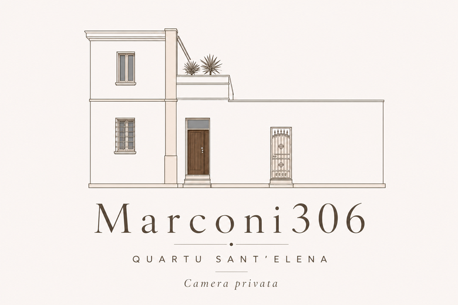
La tua stanza a Quartu Sant'Elena
Un rifugio elegante e riservato nel centro storico di Quartu Sant'Elena, a pochi minuti dal mare, dai fenicotteri rosa e dal cuore di Cagliari.

La camera
Uno spazio luminoso e curato, con ingresso riservato, bagno privato e cortile esclusivo. Ideale per chi cerca una base tranquilla e comoda per visitare Cagliari e il Sud Sardegna.
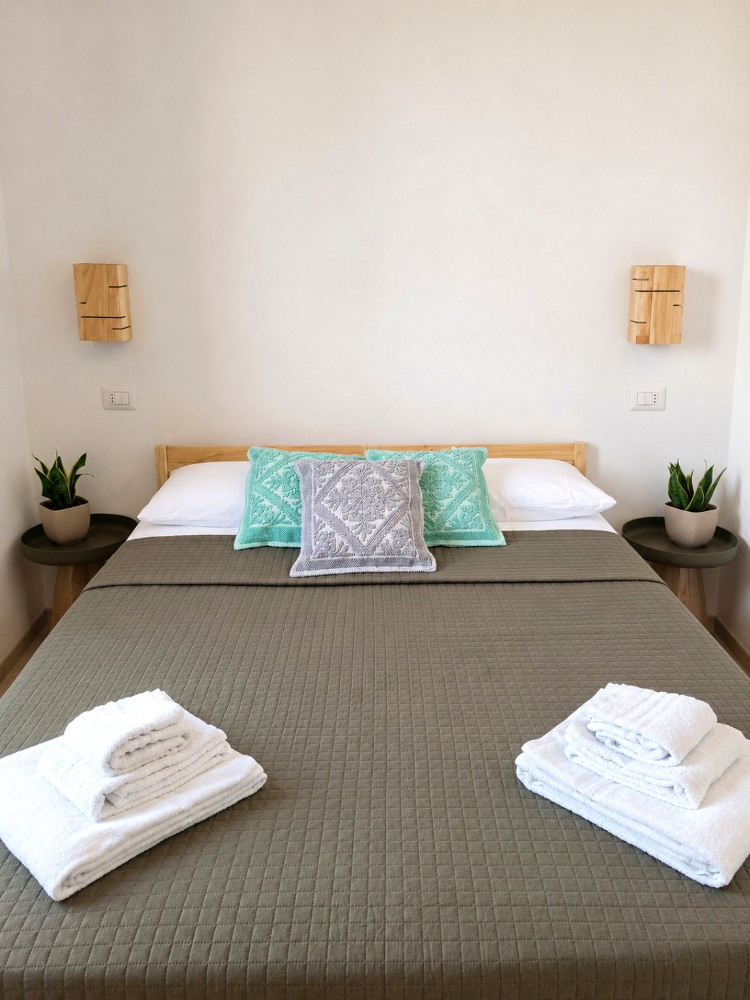
Spazi recentemente ristrutturati, puliti e accoglienti.
Camera con bagno privato e cortile ad uso esclusivo.
Contatto diretto, più semplicità e migliore tariffa disponibile.
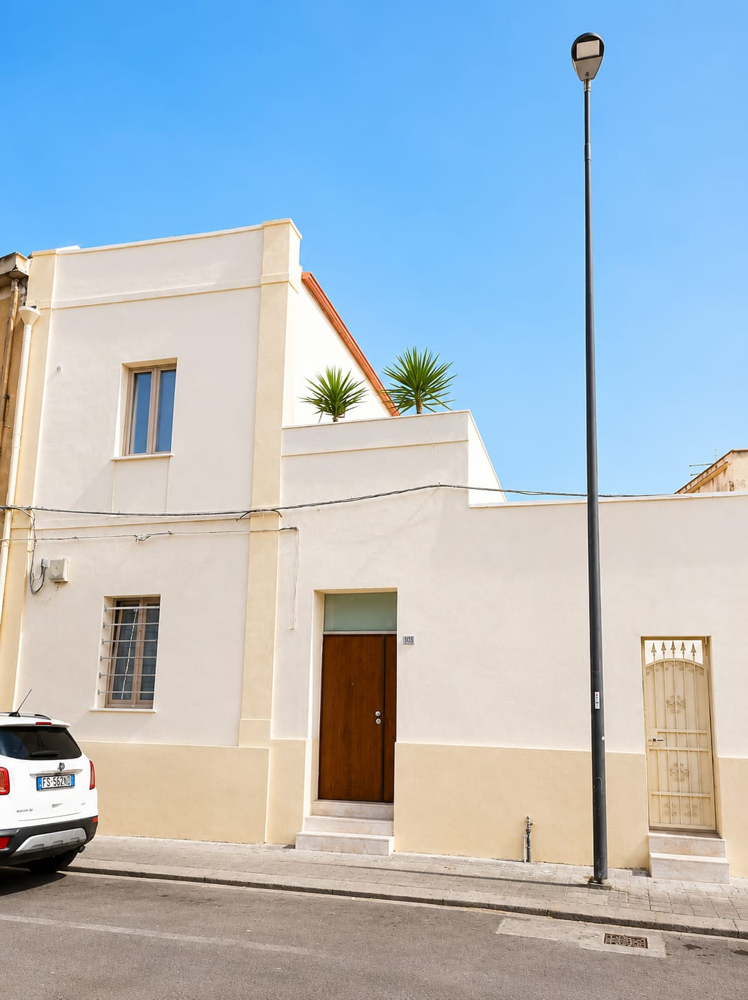
La struttura
Marconi306 nasce dal recupero di una tradizionale abitazione nel centro storico di Quartu Sant'Elena. La camera è pensata per offrire privacy, semplicità e comfort moderno, con accesso riservato e spazi curati.
Perché scegliere Marconi306
Tutto ciò che serve per un soggiorno pratico e rilassante nel Sud Sardegna.
Massima autonomia durante il soggiorno.
Spazi ad uso esclusivo, curati e funzionali.
Connessione comoda anche per smart working.
Poetto, Cagliari e Molentargius sono a pochi minuti.
Gallery
Camera, bagno privato, cortile e dettagli della struttura.
Dintorni
Dal centro storico di Quartu Sant'Elena puoi raggiungere in pochi minuti spiagge, parchi naturali, monumenti e il centro di Cagliari.

Il simbolo del centro storico di Quartu, raggiungibile con una breve passeggiata.
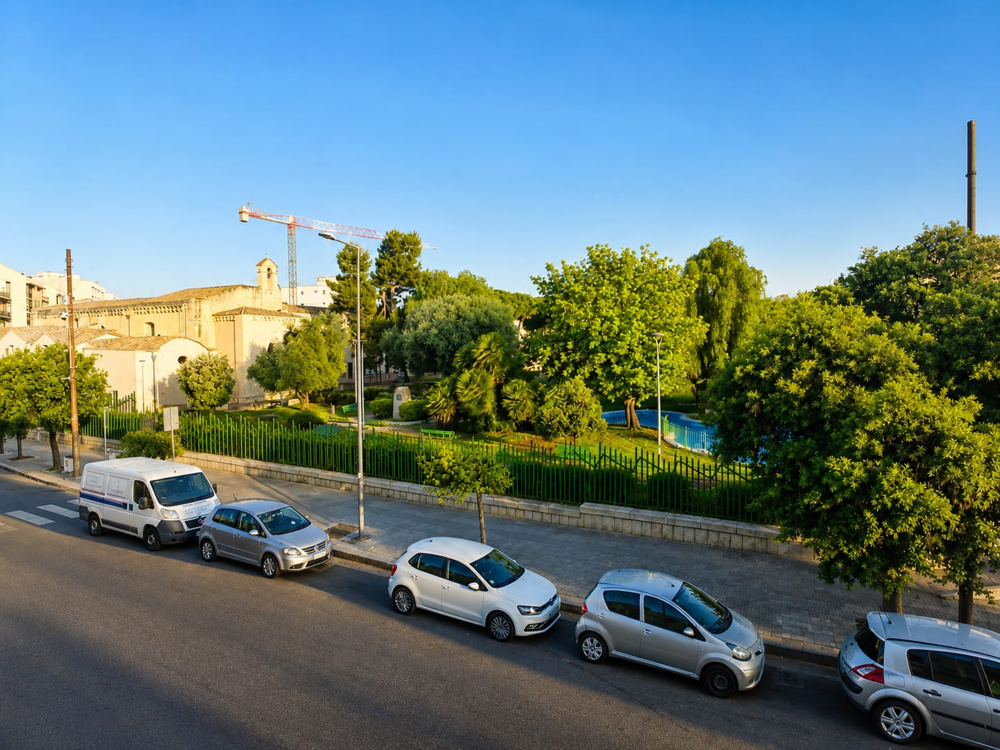
Un'oasi verde in città, ideale per una passeggiata o un momento di relax.

Uno dei luoghi più iconici della Sardegna meridionale, famoso per i fenicotteri rosa.

Il cuore storico del capoluogo sardo, tra panorami, ristoranti, shopping e vita serale.

La tua base riservata nel centro storico di Quartu Sant'Elena.
Mare
Da Marconi306 puoi partire alla scoperta di alcune delle spiagge più spettacolari della costa sud: dal Poetto fino a Villasimius, Costa Rei e Chia.
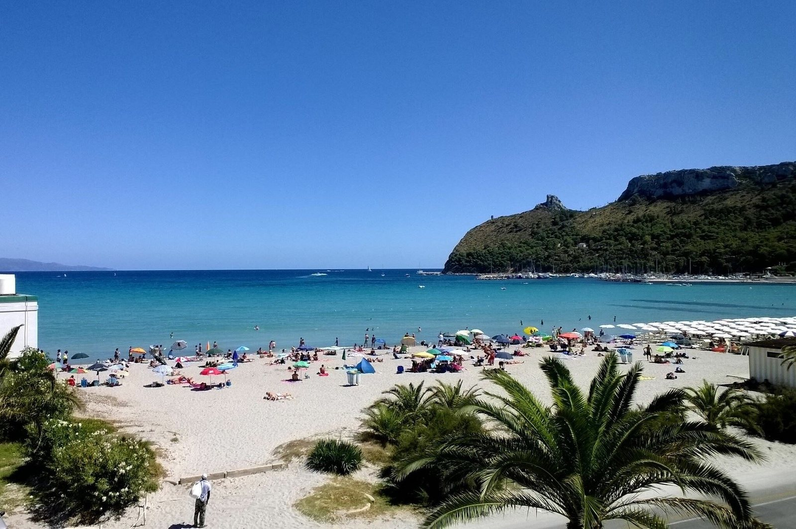
La spiaggia simbolo di Cagliari e Quartu Sant'Elena, ideale per mare, sport e relax.
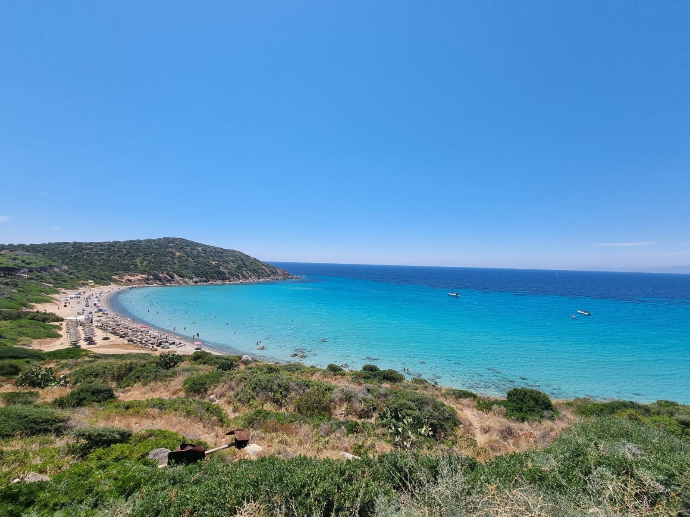
Una delle calette più iconiche della costa di Quartu, famosa per il mare turchese.
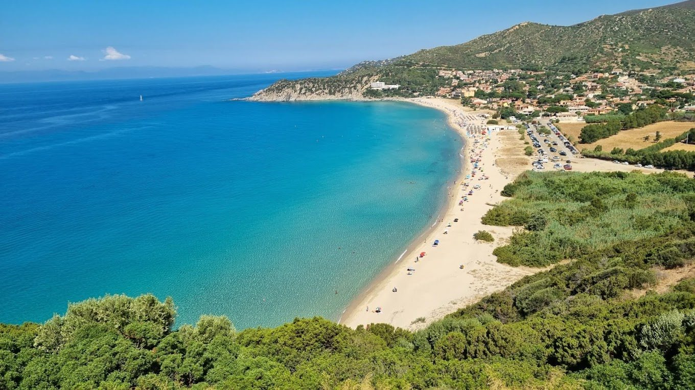
Una lunga spiaggia di sabbia dorata e mare cristallino, perfetta per famiglie e relax.
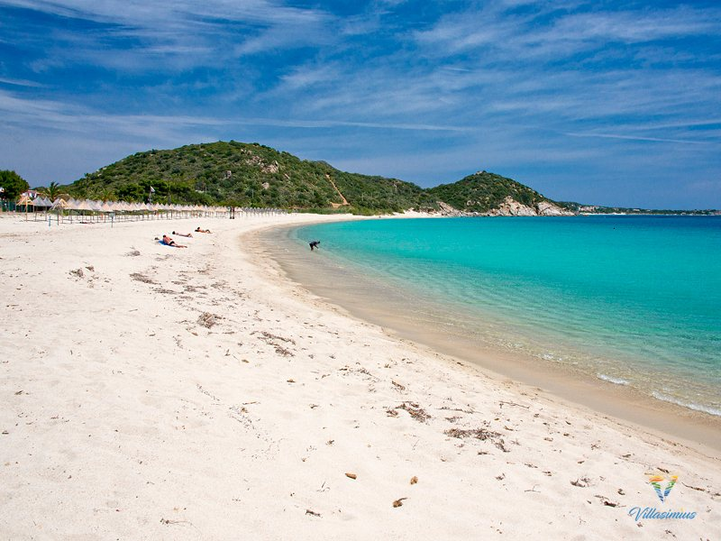
Una baia tranquilla con acque trasparenti, ideale per una giornata rilassante.
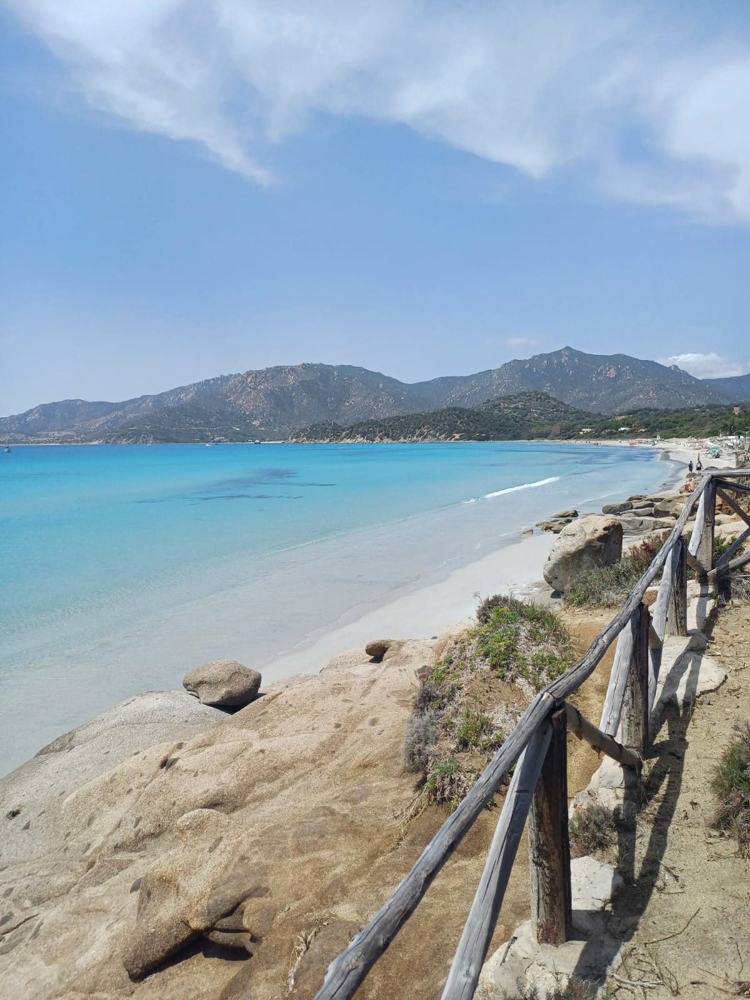
Una baia elegante e riparata, con mare limpido e paesaggi naturali.
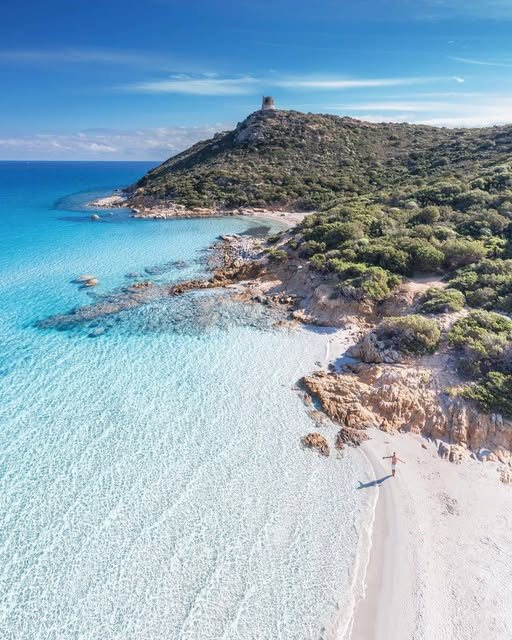
Una delle spiagge più iconiche della Sardegna, dominata dalla storica torre.
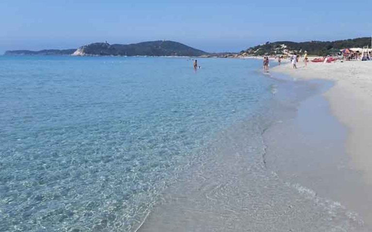
Sabbia chiara, fondali bassi e acqua cristallina: ideale anche per famiglie.

Una baia spettacolare tra mare turchese e rocce granitiche.
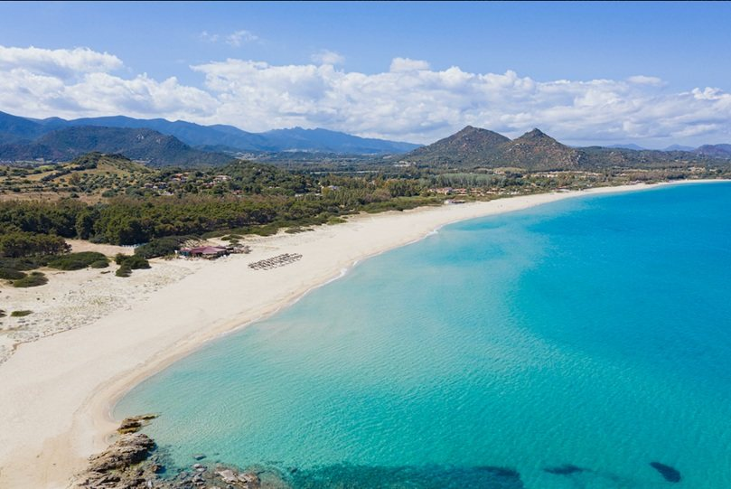
Una lunga distesa di sabbia chiara con mare turchese e ampi spazi.

Il celebre scoglio granitico della Costa Rei, circondato da acque basse e trasparenti.
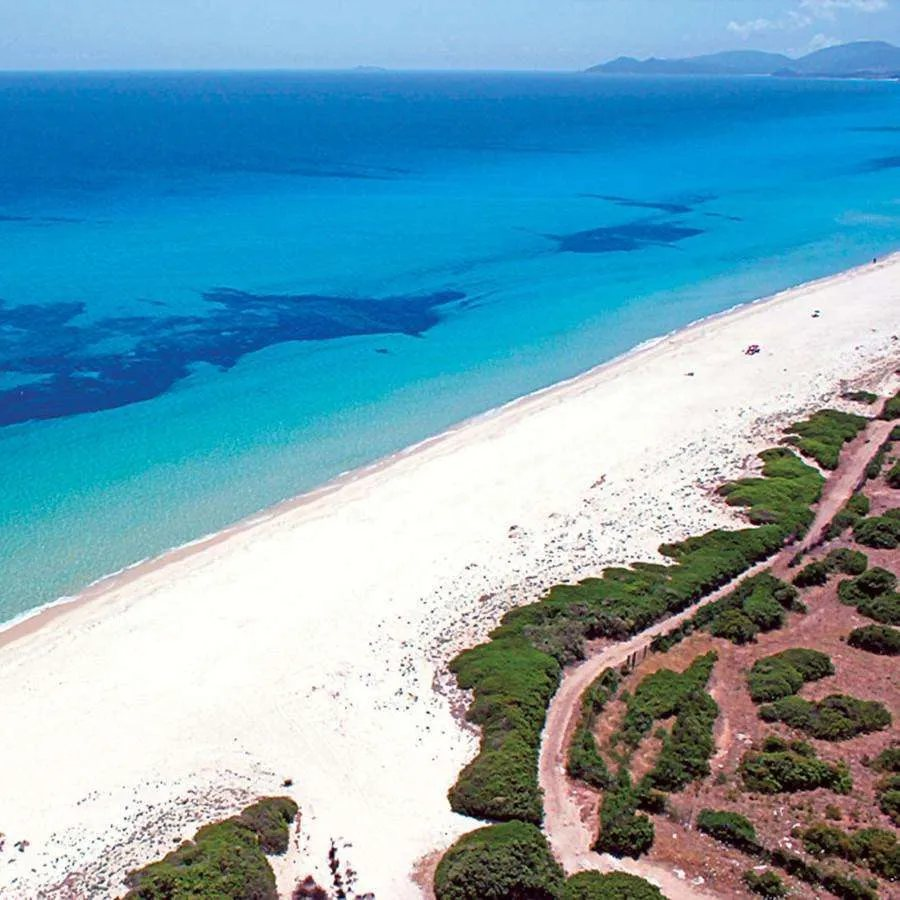
Una delle spiagge più estese del sud Sardegna, con sabbia finissima e mare caraibico.

Una spiaggia celebre di Chia, con sabbia dorata e il caratteristico isolotto.
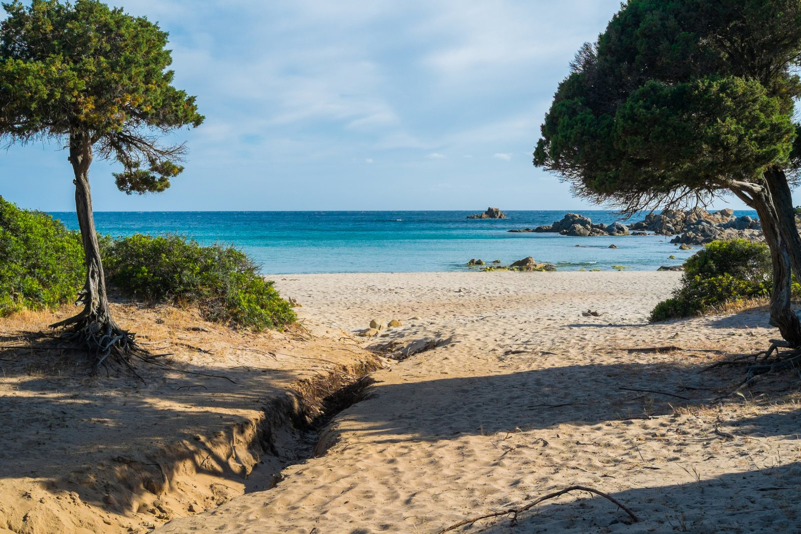
Una piccola baia immersa nella macchia mediterranea, naturale e suggestiva.

Una delle spiagge più amate della Sardegna, con acque cristalline e isolotto panoramico.
Posizione
A pochi passi dalla Basilica di Sant'Elena e vicino al Parco Matteotti. Una posizione pratica per Cagliari, Poetto, Villasimius e Costa Rei.
Indicazioni stradaliMigliore tariffa diretta
Scegli le date e contattaci: ti risponderemo con disponibilità e migliore proposta diretta, senza commissioni delle piattaforme.